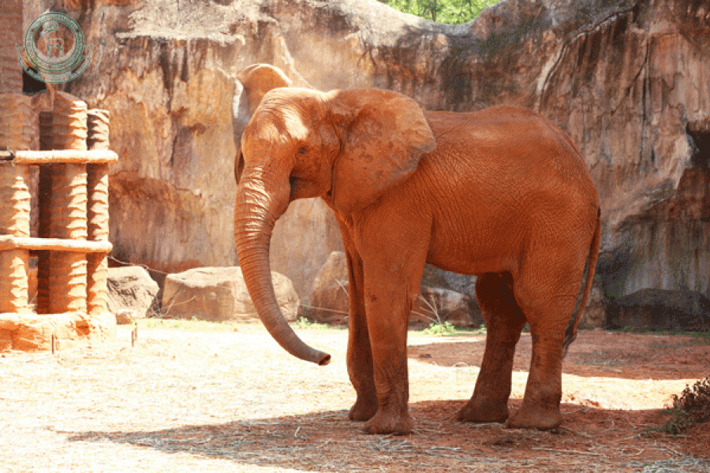
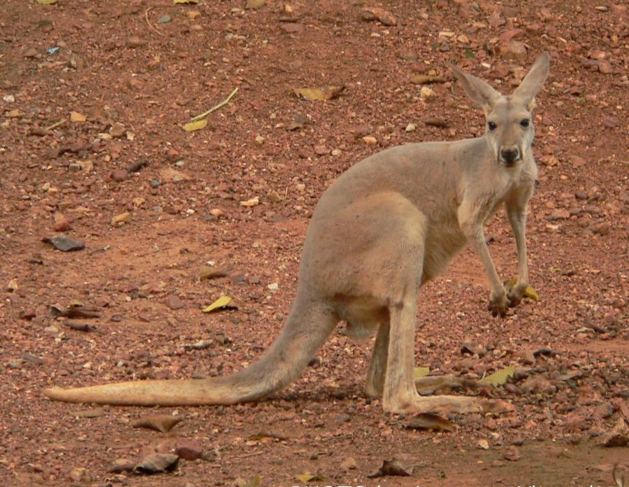
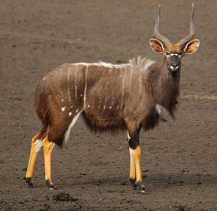

ช้างแอฟริกา/African Elephant

เป็นสัตว์บกที่มีขนาดใหญ่ที่สุด มีลักษณะคล้ายช้างเอเชียจะแตกต่างที่ใบหู ช้างแอฟริกาจะมีใบหูที่ใหญ่มากมีรูปร่างคล้ายพัดทำหน้าที่ช่วยโบกพัดเพื่อ ระบายความร้อน ผิวหนังมีลักษณะหยาบย่นเป็นรอยอย่างเห็นได้ชัดเจน ช้างแอฟริกาจะออกหาอาหารทั้งกลางวันและกลางคืน จะใช้เวลาออกหาอาหารและแหล่งน้ำวันละประมาณ 18 - 20 ชั่วโมง อาหารที่ชอบจะเป็นพวกใบไม้สดหรือแห้ง เปลือกไม้ ผลไม้ โดยมีปริมาณในวันหนึ่ง ๆ ถึง 100 - 120 กิโลกรัม กินน้ำประมาณ 80 - 150 ลิตรต่อวัน ซึ่งเมื่อเทียบกับช้างเอเชียแล้ว ช้างแอฟริกาจะกินน้อยกว่า ลักษณะโขลงของช้างแอฟริกา โดยโขลงของเพศเมียจะเป็นช้างเพศเมียที่สมบูรณ์พันธุ์และลูกๆ รวมทั้งเพศผู้ช่วงอายุยังไม่สมบูรณ์พันธุ์ที่ยังไม่แยกฝูงออกไป โดยมีจ่าฝูงเป็นเพศเมียที่อายุมาก มีขนาดร่างกายใหญ่และเป็นที่ยอมรับของสมาชิกในโขลง ส่วนฝูงของเพศผู้จะเป็นฝูงขนาดเล็กและมีความสัมพันธุ์กันแบบห่างๆ
จิงโจ้แดง/Red Kangaroo

จิงโจ้แดงจะมีลำตัวใหญ่ ลักษณะของลำตัวคล้ายผลชมพู่ ขนาดของหัวเล็กเมื่อเทียบกับลำตัว ใบหูแหลมยาว สีขนของจิงโจ้แดงเพศผู้สีขนตามร่างกายสีแดงน้ำตาล ส่วนเพศเมียสีขนจะเป็นสีเทา มีขนสีขาวด้านใต้ลำตัว มีแถบสีขาวและดำอยู่โดยรอบด้านข้างของปาก และมีแถบสีขาวตั้งแต่มุมปากถึงโคนหู ขาหลังใหญ่มีพลังในการเคลื่อนที่แบบกระโดด แต่ขาหน้าจะสั้น มีหางที่แข็งแรง นิ้วที่ขาหน้ามี 5 นิ้วในลักษณะที่เรียงกันและมีฝ่ามือที่คล้ายกับมือของมนุษย์ ที่ใช้ในการจับอาหารได้ เท้าหลังมี 4 นิ้ว โดยนิ้วด้านในจะมีโครงที่เกิดจากนิ้ว 2 ชิดติดกัน ใช้สำหรับการสางทำความสะอาดขน นิ้วกลางจะยาวและแข็งแรงใช้ในการต่อสู้ จิงโจ้แดงเป็นสัตว์เลี้ยงลูกด้วยนมที่มีการกระจายพันธุ์ในทวีปออสเตรเลีย พื้นที่ตรงกลางทวีปมีประชากรจิงโจ้แดงประมาณ 15 ล้านตัว พบในพื้นที่แห้งแล้ง ทะเลทราย ที่ป่าโปร่งที่มีไม้พุ่ม ทุ่งหญ้า เนินทราย
กระจงเล็ก/Lesser Malay Chevrotain
เป็นสัตว์เคี้ยวเอื้องกีบคู่ขนาดเล็ก ถือว่าเป็นสัตว์กีบคู่ที่มีขนาดเล็กที่สุด รูปร่างคล้ายกวาง แต่ไม่มีเขาทั้งตัวผู้และตัวเมีย กระจงเล็กมีขนสีน้ำตาลแกมแดง มีแถบสีขาวใต้คอ 3 เส้น มักพบหากินตามลำพัง จะพบเป็นคู่ช่วงฤดูผสมพันธุ์ ออกหากินทั้งเวลากลางวันและกลางคืน มักนอนพักผ่อนตามซอกหิน หรือโพรงไม้ หรือใต้พุ่มไม้ทึบ ตื่นตกใจง่าย ชอบออกมาหากินตามทุ่งหญ้าหรือชายป่า อาศัยอยู่ตามป่าดงดิบมากกว่าป่าโปร่ง และเป็นป่าต่ำด้วย ร้องเสียง “จี๊ด ๆ” คล้ายหนู ปราดเปรียวว่องไวมาก และว่ายน้ำเก่ง พบแถบเทือกเขาตะนาวศรี อินโดจีน มลายา สุมาตรา ชวา บอร์เนียว และเกาะข้างเคียงอีกหลายเกาะและในประเทศไทย อาศัยตามพื้นป่ารก เพื่อช่วงพรางตาจากศัตรู ในป่าสะแกราชพบในป่าดิบแล้ง บริเวณซับเจ็กและบริเวณเขาเขียว
ไนอาลา/Nyala

เป็นแอนติโลพขนาดค่อนข้างใหญ่ ตัวผู้สีพื้นลำตัวจะเป็นสีเทา และมีแถบสีขาวข้างลำตัว 3-14 แถบ ส่วนขาด้านล่างจะเป็นสีน้ำตาลเหลือง ตัวเมียจะมีขนาดเล็กกว่าและไม่มีเขา สีของลำตัวจะเป็นสีน้ำตาลเหลือง จะเห็นเป็นกลุ่มขนาดเล็ก เมื่อมีการเปลี่ยนแปลงสมาชิกกลุ่ม ไนอาลาตัวแม่และลูกจะเป็นตัวหลักในกลุ่ม ตัวผู้ส่วนใหญ่จะอยู่โดดเดี่ยว พบในป่าโปร่ง ทุ่งหญ้าสะวันนาบริเวณที่อยู่ใกล้แหล่งน้ำในทวีปแอฟริกา อาหารส่วนมากจะกินใบไม้เป็นหลักร่วมทั้งหญ้าในช่วงที่มีฝนตก